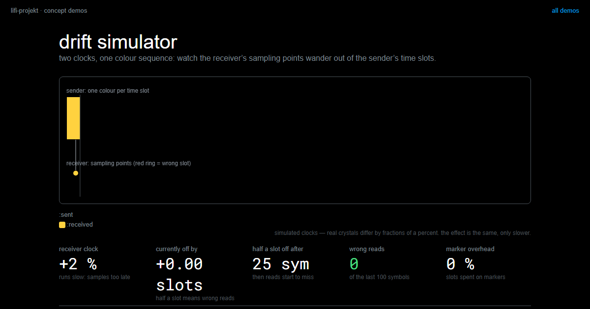

Sampling and Synchronization
Summary
Your sender switches colours, your receiver measures light. Between the two sits a question every transmission has to answer: how does the receiver know when a new symbol begins? The sender knows, it does the switching. The receiver only ever sees light. There are exactly two answers. Either time tells it, and then both sides need a shared rhythm that drifts apart the moment nobody holds it together. Or change tells it, and then the transition itself carries the message, which costs you part of your capacity. On top of that comes a second limit that almost everybody overlooks: the sensor needs time for every reading, and whoever sends faster than the sensor can look gets mixtures instead of symbols.
In this chapter, we address the following questions:
- How does the receiver know when a new symbol begins: does time tell it, or does change?
- Why do two clocks drift apart, and what holds them together?
- What happens when a symbol gets shorter than the sensor’s measurement window?
- When may the receiver believe a reading?
- What does it cost to do without a shared clock altogether?
You need this concept for Challenge 2, and in Challenge 4 it decides whether your transmission stays intact over many minutes.
Explanation
Eighty people sit on a stage and produce one shared signal. Every one of them can keep time. And yet, without the person holding the stick, the whole thing would fall apart within a minute. Not out of incompetence: small differences in tempo add up, and nobody notices their own error. Two devices on a table have exactly the same problem, only without the person holding the stick.
Before the pictures start, one piece of reading instruction, because it makes all of them honest.
{kind=link}
A dot in these drawings is shorthand. In reality the receiver measures many times inside one symbol and averages, which is exactly what your read_stable() from session 5 does. The dot sits where the middle of those readings is.
Two clocks drift apart
Sender and receiver agree on the same rate, say five symbols per second, and start together. From then on each of them counts for itself, with its own clock. And no two clocks run exactly alike: one ticks a tiny bit faster than the other, not because it is broken, but because no two components are identical. Per symbol the difference is laughable. But it adds up with every symbol, and at some point the receiver no longer measures in the middle of the symbol but at its edge, then in the transition, then in the wrong symbol.

This is why the problem hangs on speed. The error grows with elapsed time, but the slot shrinks with the rate. At one symbol per second a slot is so wide that the accumulated error goes unnoticed for minutes. At ten symbols per second the same error is larger than half a slot within seconds, and from then on nonsense arrives.
The sensor needs time to look
Almost everybody overlooks the second limit. Your colour sensor does not deliver an instantaneous value, it collects light over an adjustable stretch of time and reports the average; you know this as the integration time. As long as a symbol lasts longer than that measurement window, there are readings that fall entirely inside one symbol, and the reported value matches one of your profiles. Once the symbol gets shorter than the window, every reading contains a colour change: the sensor averages over two colours and reports a mixture that matches nothing.

The nasty part is that there is no error message. The number looks like any other number, it just does not mean anything any more. Shortening the window helps against the mixing but increases the scatter, which is the same trade-off you met under Signal and Noise.
Both causes are versions of one question: when does a new symbol begin? The rest of this chapter is the two answers.
The clocked way: time tells you
The first answer is the one you have been using since Challenge 1: shared start, same rate, then both sides count. That holds exactly as long as the accumulated clock error stays smaller than half a symbol. So it is not a question of whether this transmission tips over, only when.
{kind=link}
Work the numbers through once, it is a single line. Half a per cent of ten seconds is 50 ms, and at ten symbols per second that is half a symbol. The threshold matters here. It is not a whole symbol of error that breaks the transmission, it is half of one, because the reading sits in the middle of its slot and has only half the width of room in each direction. The same arithmetic explains why slow is so much more robust: at one symbol per second half a slot is 500 ms wide, and the same two clocks would last a hundred seconds.
What helps is what holds an orchestra together: not one agreement at the start, but a recurring one.
{kind=link}
In a transmission that pulse is called a marker. The sender slips one in at fixed intervals, a symbol reserved for exactly this job: a colour outside your data alphabet, for instance, or a short dark pause. All that matters is that the receiver cannot confuse it with a data symbol.
{kind=link}
And how does the receiver reset its clock with it? Not by merely seeing the marker somewhere in its own grid, that would achieve nothing. It samples faster than symbols arrive and remembers when the marker begins; there it anchors its grid afresh, next symbol boundary equals marker start plus symbol duration. The remaining error is at most one sampling step. An orchestra does the same thing: it registers not only that a beat came, but when.
The price is that markers are symbols carrying no payload. Send a marker every eight symbols and you give away an eighth of your rate. Whether that is worth it depends on how badly your clocks really drift, and that is a question for measurement, not for belief. You can get a feel for both in the simulator: set the clock error, watch the sampling points wander out of the colour slots until the received line tips against the sent one, and then switch the marker on.
drift simulatortwo clocks, slightly apart: watch the receiver’s sampling points wander out of the time slots until the message turns to garbage, then let a sync marker save it.LiFi Project · concept demos
The clock-free way: change tells you
The second answer needs no shared clock at all. The obvious version would be: every colour is a symbol, and a colour change means “next one, please”. The receiver simply measures as often as it can and reacts only to changes. That version has a catch.
{kind=link}
The fix moves the information out of the colour and into the transition. From each colour two successors are allowed, one standing for 0 and one for 1, and your own colour is forbidden as a successor. That way there is always a change, and the problem case cannot occur.
You pay for this in capacity. Because your own colour drops out, a transition with \(k\) colours carries only \(\log_2(k-1)\) bits instead of \(\log_2(k)\).
{kind=link}
There is a trap in that table for everybody who thinks in powers of two: for a clean 2 bits per transition you need five colours, not four. Whoever encodes over transitions wants an alphabet of size \(2^n + 1\).
Clock-free is not time-free
The most common wrong conclusion sounds like this: “we got rid of the clock, so time is not an issue any more.” Two decisions about time remain. First, during a colour change the sensor sees mixtures, so the receiver needs a threshold for how long a colour must hold steady before it counts as a new state; otherwise it invents symbols out of the intermediate values. Second, the number of transitions per second still decides your throughput, and there the measurement window and the scatter apply exactly as before.
In the end the same arithmetic counts for both ways:
\[t = \frac{n}{r \cdot b}\]
with \(n\) the number of bits to send, \(r\) the symbol rate and \(b\) the bits per symbol. Only \(b\) separates the two ways: clocked \(b = \log_2(k)\), clock-free \(b = \log_2(k-1)\). A worked example: 16,000 bits are 2 KB, the payload of Challenge 4. With four colours, clocked, that is 2 bits per symbol; at five symbols per second you get 10 bit/s, so about 27 minutes. Clock-free, the same four colours carry only 1.58 bits per transition, so about 34 minutes. That is the price of synchronization freedom, measured in minutes.
This calculation is the currency Challenge 4 is paid in, and it has exactly two levers: bits per symbol, and symbols per second. How far those levers can be pushed at all is the subject of Throughput and Limits.
Slides
The slides for this concept, right here. Page through them with the buttons in the top right corner, or click into the slides and use the arrow keys. The other buttons give you full screen, the slides in a new tab, and the deck as a PDF.
Practice questions
Try questions in the exam format here, with the answer and its reasoning shown right away.
Further reading
- Charles Petzold: Code. The Hidden Language of Computer Hardware and Software. Microsoft Press, 2nd edition 2022. Chapter 19 builds a clock out of an oscillator and then spends the rest of the book living with the consequences; it is the friendliest place to see why everything digital is really a question of timing.
- Christiaan Huygens’ letter to his father, 26 February 1665, on two pendulum clocks hanging from the same beam that pull each other into step. The first written account of synchronization, and still the clearest picture of why a shared start is not enough. Summarized with the original passages in Matthew Bennett et al.: Huygens’s clocks. Proceedings of the Royal Society A 458, 2002. https://doi.org/10.1098/rspa.2001.0888
- The Manchester code, used by the earliest Ethernet networks, puts a transition in the middle of every bit for exactly the reason described above. The Wikipedia article https://en.wikipedia.org/wiki/Manchester_code shows the waveform, and it is worth working out for yourself what that costs in bits per second.